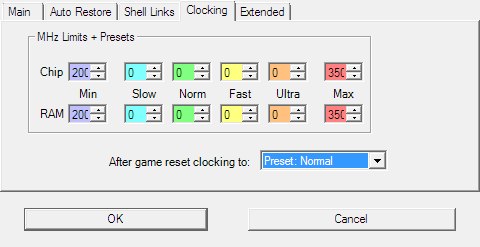
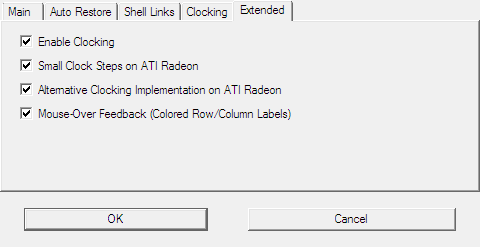
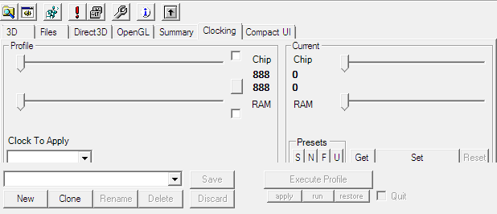
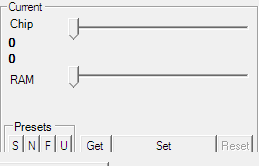
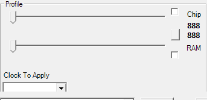
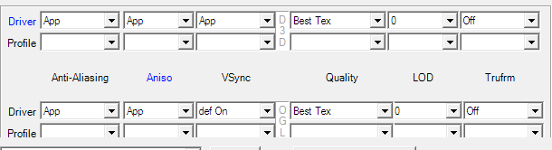
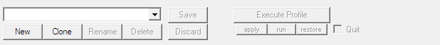
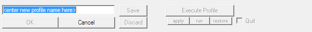

3DProf can read and set clock on supported video cards hardware. Clocks can be set in different ways:
The following settings are made to the Settings dialog reachable from menu Options | Settings.

Clock limits are a safety feature. 3DProf will never set a clock which is lower or greater than the user-configured minimum or maximum.
Please configure the limits by changing the numbers in the boxes above and below the Min and Max labels.
Example: You have configured a maximal RAM clock of 350 MHz. A profile contains a setting for 380 MHz RAM clock. The RAM will be clocked with 350 MHz.
The four clock presets Slow, Normal, Fast and Ultra can be used in profiles instead of MHz numbers. They can also applied directly from the user interface via hotkeys, tray-menu and buttons in the main window.
Clock After Game: Here you can chose what clock is used after a game has finished. The first item (Previous/Standard) will restore the clock to the values before the games or use the clocks provided by the default profile (according to Auto Restore configuration). The remaining items will cause the clock set to a configured preset after the game.

Enable Clocking: If unchecked, the clocking features of 3DProf will be deactivated. The clocking controls in the main window will be hidden.
Experimental: Radeon Smaller Clocksteps allows smaller clock number increments on Radeon cards. Most clockers in the past did not change the default Reference Divider but only the Feedback Dividers. On most Radeons, the clock step using the default Reference Divider is 6.75 MHz.The clocking controls can be found on the Clocking tab in the main window

The controls for changing current clocks are located in the group Current. This groups can be found on the right hand side in the Clocking tab of the main window.

Enter the desired clocks using the two sliders. After that hit the Set button. Note: If the sliders will not go high or low enough then you need to change the clock-limits first.)
Hit one of the buttons labelled S, N, F or U to load a predefined preset. No need to hit Set button after that.
Presets can also be loaded from the tray menu. You can also configure a hotkey for each preset in the hotkeys editor
This function is currently broken. The Reset button should set the default clock of the card, but this does not work, because the clocker does not know that clocks.
Current clocks are read from card every time you open the clocking tab. If an error occurs, it will be ignored.
You can also click the Get button to read the current clock from the card. If an error occurs, it will be shown.
The controls for changing profile clocks are located in the group Profile. This groups can be found on the left hand side in the Clocking tab of the main window.

The clock you define in a profile will be used to clock the card as soon as you apply the profile.
This is the preffered method to do profile-dependent clocking. Choose one of the predefined preset from the list.
In a new profile, the clocking feature is disabled. If the profile is applied, the current clocks remains unchanged.
The clock settings can be enabled, by checking the boxes near the sliders in the left side of the window
After that, choose the desired clock speed using the sliders. A hit on the Apply button would now set the current clocks according to the profile.
Like always, when a profile was changed: Hitting the Save button will save the changed profiles into the config file. This must be done, before starting the profile via a shell shortcut, or the shortcut will not notice the change.
3D options controls are located at the 3D tab on the main window. Additional (card dependent)controls can be found at Direct3D and OpenGL tabs.

To change the anisotropic filter of Direct3D for example, choose a value from the list box in row Driver and column Aniso. This change will be written to Registry immediatly. This behavior is similar to the nVidia tray icon menu.
To change the profile-preference for the anisotropic filter of Direct3D for example, choose a value from the list box in row Profile and column Aniso. This change will be written to the Profile immediatly. (But as always, the profiles will not saved to disk until Save button is hit).
Disabling 3D settings can be useful to make for example OpenGL-only profiles, or profiles which only do clocking, but leave 3D settings alone.
If you don't want for example any OpenGL settings in a profile, then disable the entire Profile row of OpenGL by right-clicking on the row label (the label named Profile). This will affect all OpenGL setting on Main tab an Extra OpenGL tab.
You can disable the Direct3D row the same way. Or you can just disable single columns by right-clicking on the column label.
To disable single 3D Options, just right click direct into its control box.
To disable all 3D Settings, just do a right-click on Profile labels of both D3D and OGL.
3D options are configured in text files located in folders
.\specfiles and .\usr-specfiles. Syntax of
the files is explained in .\specfiles\README.TXT
and .\usr-specfiles\README.TXT
Click New button.

Enter a new name into to the textfield. Then hit OK button.

Every time you make a change to a profile or create a new profile, the Save buttons becomes clickable.
Until you click on this Save button, changes are only valid for the current session of 3DProf. If you click Save, alle profile changes you made before will be saved.